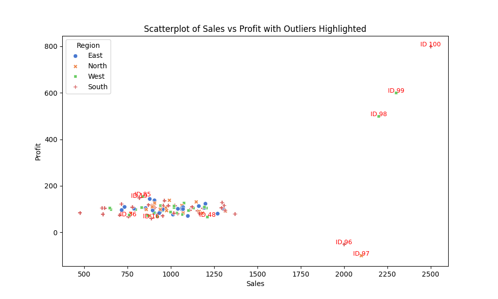

Introduction
Outliers are data points that deviate significantly from the rest of the dataset. Detecting and handling outliers is essential for accurate data analysis and modelling. This page explores several techniques for detecting outliers and provides practical Python implementations for each method.
Boxplots and IQR
The Interquartile Range (IQR) method identifies outliers as values falling below the lower bound or above the upper bound, defined as:
Lower Bound = Q1 - 1.5 * IQR
Upper Bound = Q3 + 1.5 * IQR
Boxplots visually highlight these outliers. Below is an example of a boxplot for the "Profit" column:

# Identify and label outliers using IQR
def identify_outliers(column):
Q1 = data[column].quantile(0.25)
Q3 = data[column].quantile(0.75)
IQR = Q3 - Q1
lower_bound = Q1 - 1.5 * IQR
upper_bound = Q3 + 1.5 * IQR
data[f"{column}_Outlier"] = data[column].apply(
lambda x: "Outlier" if (x < lower_bound or x > upper_bound) else "Normal"
)
return data[f"{column}_Outlier"]
Z-Scores
Z-Scores standardise data points to indicate their distance from the mean in terms of standard deviations. Values with |Z| > 3 are commonly considered outliers.
# Calculate Z-Scores
def calculate_z_scores(column):
mean = data[column].mean()
std_dev = data[column].std()
z_scores = (data[column] - mean) / std_dev
return z_scores
Isolation Forests
Isolation Forest is a machine learning algorithm that isolates outliers by partitioning the dataset. It assigns labels (-1 for outliers, 1 for inliers).
# Detect outliers using Isolation Forest
isolation_forest = IsolationForest(n_estimators=100, contamination=0.01, random_state=42)
data["Outlier_Flag"] = isolation_forest.fit_predict(data_for_analysis)
Winsorisation
Winsorisation caps extreme values at specified percentiles (e.g., 5th and 95th) to reduce their influence on analysis.
# Apply Winsorisation
def apply_winsorisation(column, lower_percentile=0.05, upper_percentile=0.95):
lower_bound = data[column].quantile(lower_percentile)
upper_bound = data[column].quantile(upper_percentile)
return data[column].clip(lower=lower_bound, upper=upper_bound)
Scatterplots for Outliers
Scatterplots provide a visual representation of relationships between variables, highlighting potential outliers. Below is an example scatterplot of "Sales" vs "Profit":

# Generate scatterplots
sns.scatterplot(data=data, x="Sales", y="Profit", hue="Region", style="Region")
plt.title("Scatterplot of Sales vs Profit with Outliers Highlighted")
plt.show()
Conclusion
Each outlier detection technique has its strengths and limitations. The choice of method depends on the dataset's characteristics and the analysis goals. By identifying and handling outliers effectively, analysts can ensure the robustness of their insights.